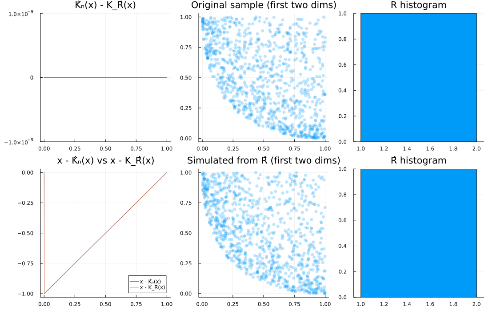
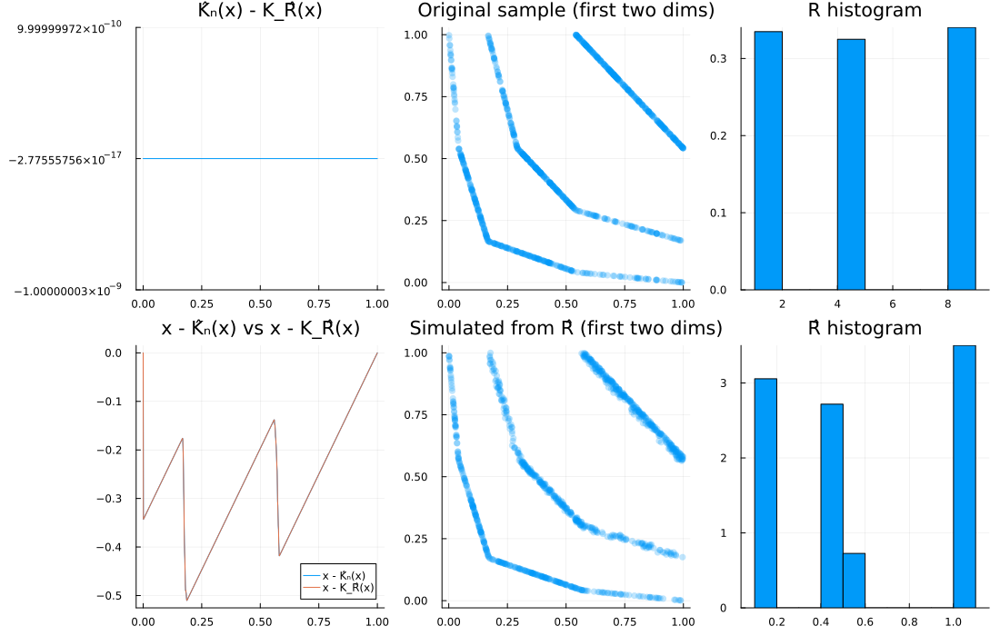
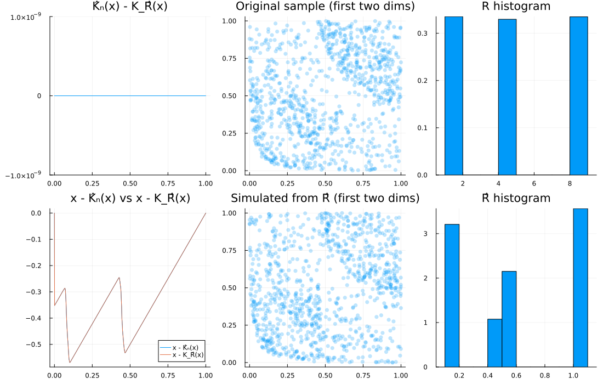
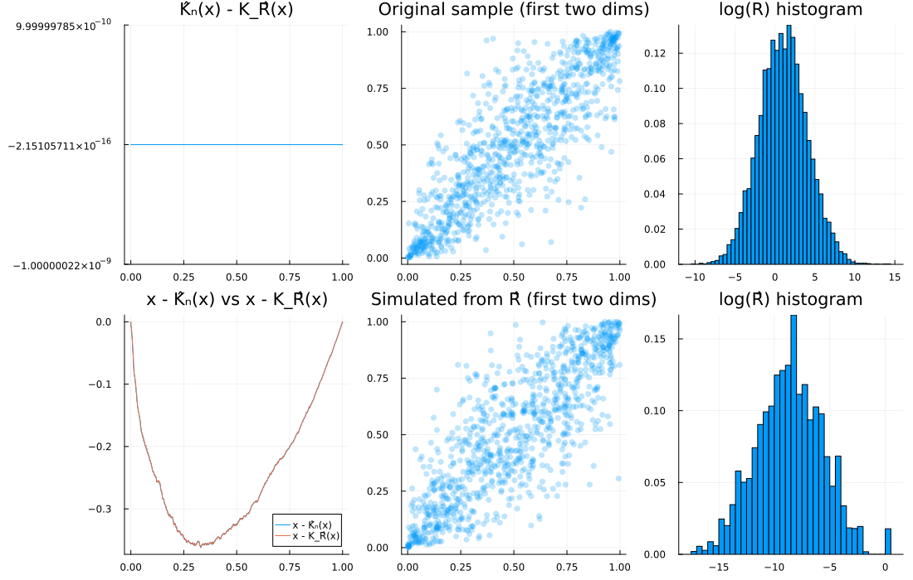
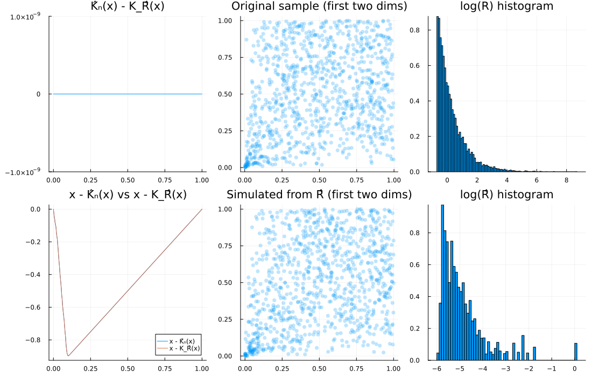
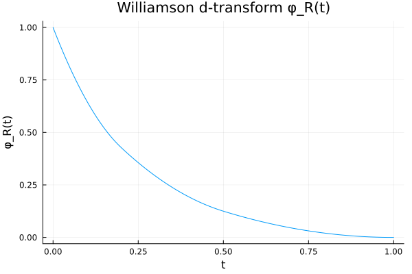

Nonparametric estimation of the radial law in Archimedean copulas
Introduction
This example recalls and implements a practical, nonparametric way to estimate the radial (mixing) distribution R that underlies a d-Archimedean copula by inverting a link between the kendall distribution and the radial part [70] [71], and applying this inversion to the empirical Kendall distribution. Suprisingly, a triangular recursion appears that maps empirical kendall atoms to radial atoms: see, in particular, [28]. We’ll:
- explain the idea,
- implement a small estimator,
- validate it visually on discrete and continuous radial laws,
- and compare original vs fitted copulas.
For a d-Archimedean copula with generator $\varphi$, there exists a nonnegative random variable $R$ (the radial law) such that
\[\varphi(t) \;=\; \mathbb{E}\!\left[\left(1 - \frac{t}{R}\right)_{+}^{\,d-1}\right].\]
The empirical Kendall distribution of the copula sample carries enough information to reconstruct a discrete approximation of $R$ (up to scaling). That’s the key idea here.
Note that there exists other approaches at archimedean estimation:
- Parametric estimation fixes a generator family (Clayton, Gumbel, Frank, Joe, …) and estimates parameters by (pseudo-)likelihood, IFM, or moments such as inversion of Kendall’s $\tau$ [72]; [73]. Efficient but not nonparametric.
- Semiparametric approaches keep a parametric generator with nonparametric margins [74].
- Kendall-process methods, notably [75] for $d=2$, highlight the central role of the Kendall distribution. Extensions include settings with censoring [76].
Theoretical setup
Let $C$ be a $d$-dimensional Archimedean copula $\,(d\ge 2)\,$ with $d$-monotone generator $\varphi$. By the Williamson representation [71]; [70], the random variable $R$ defined above exists and is unique up to scale.
If $\boldsymbol{U}\sim C$, define the Kendall distribution
\[K_R(x) \;=\; \mathbb{P}\!\left(C(\boldsymbol{U})\le x\right), \qquad x\in[0,1].\]
For empirical work, given a sample $\{\boldsymbol{U}_i\}_{i=1}^n$ and the Deheuvels empirical copula $C_n$, the empirical Kendall distribution is
\[\widehat{K}_n(x) \;=\; \frac{1}{n}\sum_{i=1}^n \mathbf{1}\!\left\{C_n(\boldsymbol{U}_i)\le x\right\}.\]
When $R$ is discrete, $R = \sum_{j=1}^N w_j\, \delta_{r_j}$ with $0<r_1<\cdots<r_N$, the asociated generator writes
\[\varphi_R(t) \;=\; \sum_{j=1}^N w_j\, \Big(1-\tfrac{t}{r_j}\Big)_{+}^{\,d-1}.\]
Finally, it is known from [70] that when C is archimedean, the true kendall function writes
\[K_R(x) = \mathbb P\left(\varphi_R(R) \le u\right),\]
and therefore $K_R$ has jumps precisely at the points $x_j = \varphi_R(r_j)$ with masses $w_j$ when $R$ is discrete.
Proposed estimator (triangular inversion)
From the Kendall pseudo-sample $\{C_n(\boldsymbol{U}_i)\}_{i=1}^n$, collect the distinct values and their empirical frequencies, defining
\[x_1 > x_2 > \cdots > x_N,\qquad w_j \;=\; \frac{1}{n}\sum_{i=1}^n \mathbf{1}\{C_n(\boldsymbol{U}_i) = x_j\},\; j=1,\dots,N,\]
so that $\sum_{j=1}^N w_j = 1$ and $\widehat{K}_n(x) = \sum_{j=1}^N w_j\, \mathbf{1}\{x_j\le x\}$. Recover support points $0<r_1<\cdots<r_N$ by solving the system $x_j = \varphi_R(r_j)$. Because positive parts in $\varphi_R$ switch on only when $r_j$ exceeds the evaluation point, the system is triangular:
\[\begin{aligned} & r_N := 1, \\ & r_{N-1} := 1 - \left(\frac{x_{N-1}}{w_N}\right)^{\!1/(d-1)}, \\ & \text{for } k = N-2,\dots,1:\quad x_k \;=\; \sum_{j=k+1}^N w_j\Big(1-\tfrac{r_k}{r_j}\Big)^{\!d-1}, \end{aligned}\]
solved by monotone 1D root finding in $r_k\in[0, r_{k+1})$. The estimate is then
\[\widehat{R} \sim \sum_{j=1}^N w_j\, \delta_{r_j}.\]
The associated generator $\varphi_{\widehat{R}}$ is continuous and piecewise polynomial between the recovered radii. We can prove existance and unicity of the obtained estimator, but convergence is still open since the representativity of the Kendall distribution is not certain in higher dimensions (see [28]).
Specificities when $d=2$
When $d=2$, powers reduce to 1 and closed forms appear. Let $A_k = \sum_{j=k+1}^N w_j$ and $B_k = \sum_{j=k+1}^N \tfrac{w_j}{r_j}$. Then the recursion gives
\[x_k = A_k - r_k B_k \;\iff\; r_k = \frac{A_k - x_k}{B_k}.\]
This closed form could be used directly (even if our code does not for the moment).
Implementation
We define helpers to:
- compute empirical Kendall values,
- build φ_R from a candidate radial distribution,
- simulate Archimedean copula samples from R,
- fit a discrete radial law from Kendall atoms,
- and produce quick diagnostics.
The code proposed below is expected to become the default fitting method for Williamson generators, once the fitting interface is formalized accross the package. Stay tuned!
using Distributions, StatsBase, Roots, QuadGK, Plots
# Empirical Kendall sample and function from a pseudo-sample u (d×n, columns are obs)
function kendall_sample(u::AbstractMatrix)
d, n = size(u)
W = zeros(Float64, n)
for i in 1:n
ui = @view u[:, i]
count_le = 0
for j in 1:n
count_le += all(@view(u[:, j]) .≤ ui)
end
W[i] = count_le / (n+1)
end
return W
end
kendall_function(u::AbstractMatrix) = (W = kendall_sample(u); t -> count(w -> w <= t, W) / length(W))
# Williamson d-transform φ_R for several R types
mk_ϕᵣ(R::DiscreteUnivariateDistribution, d) = let supp = support(R), w = pdf.(R, supp)
t -> sum(wi * max(1 - t/x, 0)^(d-1) for (x, wi) in zip(supp, w))
end
mk_ϕᵣ(R::ContinuousUnivariateDistribution, d) = function(t)
t == 0 && return 1 - Distributions.cdf(R, 0)
val, = quadgk(x -> pdf(R, x) * (1 - t/x)^(d-1), t, Inf; rtol=1e-6)
return val
end
mk_ϕᵣ(R::DiscreteNonParametric, d) = let supp = support(R), w = pdf.(R, support(R))
t -> sum(wi * max(1 - t/r, 0)^(d-1) for (wi, r) in zip(w, supp))
end
# Simulate d×n Archimedean copula sample from a given radial R via simplex representation
function spl_cop(R, d::Int, n::Int)
ϕᵣ = mk_ϕᵣ(R, d)
S = -log.(rand(d, n))
S ./= sum(S, dims=1)
return ϕᵣ.(S .* rand(R, n)')
end
# Utilities for Kendall atoms
function kendall_atoms_and_weights(u::AbstractMatrix)
x = sort(kendall_sample(u), rev=true)
atoms = unique(x)
weights = [mean(x .== xi) for xi in atoms]
return atoms, weights, length(atoms)
end
function unique_atoms_and_weights(atoms::AbstractVector, weights::AbstractVector)
agg = Dict{eltype(atoms), Float64}()
for (a, w) in zip(atoms, weights)
agg[a] = get(agg, a, 0.0) + w
end
uniq_atoms = collect(keys(agg))
uniq_weights = [agg[a] for a in uniq_atoms]
idx = sortperm(uniq_atoms)
return uniq_atoms[idx], uniq_weights[idx]
end
"""
fit_archi_williamson(u::AbstractMatrix)
Estimate the mixing (radial) distribution R of a d-dimensional Archimedean copula from a pseudo-sample u by inverting the empirical Kendall distribution via the Williamson d-transform. Returns a DiscreteNonParametric distribution R̂ whose atoms are the recovered radii and whose weights are inherited from the empirical Kendall atoms.
Purpose
- For a d-Archimedean copula with generator ψ, there exists a nonnegative random variable R such that
φ_R(t) = E[(1 - t/R)₊^(d-1)]
is the Williamson d-transform of R and ψ ≡ φ_R. The empirical Kendall distribution of a sample from the copula determines a discrete approximation of R. This routine implements that inversion.
Inputs
- u::AbstractMatrix: d×n matrix of pseudo-observations with uniform(0,1) margins (columns are observations). Assumes the sample is i.i.d. from a d-Archimedean copula.
Output
- DiscreteNonParametric: an estimate R̂ of the radial distribution. If the empirical Kendall distribution has a single atom, the result degenerates at 1.0.
Assumptions
- d ≥ 2.
- The underlying copula is Archimedean in dimension d with a d-monotone generator, i.e., admits the Williamson representation ψ(t) = E[(1 - t/R)₊^(d-1)] for some R ≥ 0.
- u consists of i.i.d. pseudo-observations with continuous margins (or ranks/pseudo-observations), so that the empirical copula and empirical Kendall distribution are meaningful.
Method (high level)
1) Compute the empirical Kendall sample W_i = C_n(U_i) using the empirical copula C_n. Extract its distinct atoms x_k (sorted in decreasing order) and their empirical probabilities w_k. Let N be the number of distinct atoms.
2) Normalize scale by setting the largest recovered radius r_N = 1.0.
3) Use the identity that links a Kendall atom x_k to the yet-unknown radius r_k:
x_k = ∑_{j=k+1}^N w_j * max(1 - r_k/r_j, 0)^(d-1).
- For k = N-1, this simplifies to x_{N-1} = w_N * (1 - r_{N-1}/r_N)^(d-1), giving the closed form
r_{N-1} = 1 - (x_{N-1}/w_N)^(1/(d-1)).
4) For k = N-2, …, 1, solve the 1D root-finding problem
g_k(y) - x_k = 0, where g_k(y) = ∑_{j=k+1}^N w_j * max(1 - y/r_j, 0)^(d-1),
by bracketing y ∈ [0, r_{k+1}) and using Roots.find_zero. Monotonicity of g_k ensures a unique solution in that interval under the model.
5) Merge duplicated radii (if any) by summing their weights and return DiscreteNonParametric(unique_r, unique_w).
Numerical safeguards implemented
- Ratio clamp for r_{N-1}: x_{N-1}/w_N is clamped to [0,1] before applying the power.
- Bracketing: initial bracket [0, r_{k+1}) is tightened with small eps; if not bracketing x_k, the interval is widened to [0, r_{k+1}] and, as a last resort, a projection is applied.
- Post-solve clamping: r_k is clamped to [0, r_{k+1}) to preserve monotonicity r_1 ≤ … ≤ r_N = 1.
- Coincident atoms are merged with unique_atoms_and_weights.
Complexity
- N is the number of distinct Kendall atoms. The loop performs O(N) 1D root-finds; each g_k evaluation is O(N - k), so the overall cost is O(N^2) function evaluations in typical cases.
Usage notes
- The returned R̂ can be passed to mk_ϕᵣ to reconstruct φ_R and used with spl_cop to simulate from the fitted Archimedean copula.
- When N == 1, the Kendall distribution is degenerate and the fitted R̂ is a Dirac at 1.
References
- Genest, C., and Nešlehová, J. (2011). See paper.tex in this repository for the exact citation and for the link between Kendall distributions of Archimedean copulas and the Williamson d-transform.
- McNeil, A. J., and Nešlehová, J. (2009): for the stochastic representation of d-Archimedean copulas and d-monotone generators via the Williamson transform.
See also
- kendall_atoms_and_weights, mk_ϕᵣ, spl_cop.
"""
function fit_archi_williamson(u::AbstractMatrix)
d, n = size(u)
x, w, N = kendall_atoms_and_weights(u)
N == 1 && return DiscreteNonParametric([1.0], [1.0])
r = zeros(eltype(x), N)
r[N] = 1.0
ratio = clamp(x[N-1] / w[N], 0.0, 1.0)
r[N-1] = 1.0 - ratio^(1.0/(d-1))
for k in (N-2):-1:1
gk = function(y)
s = zero(y)
for j in (k+1):N
z = 1.0 - y / r[j]
s += w[j] * (z > 0 ? z^(d-1) : 0.0)
end
return s
end
eps = 1e-14
a, b = 0.0, max(r[k+1] - eps, 0.0)
ga, gb = gk(a), gk(b)
if !(ga + 1e-12 >= x[k] >= gb - 1e-12)
# widen bracket if needed
a, b = 0.0, r[k+1]
end
r[k] = Roots.find_zero(y -> gk(y) - x[k], (a, b); verbose=false)
r[k] = clamp(r[k], 0.0, r[k+1] - eps)
end
return DiscreteNonParametric(unique_atoms_and_weights(r, w)...)
end
# Visual diagnostics: Kendall overlay + original vs simulated copula + (optional) histograms of R vs R̂
function diagnose_plots(u::AbstractMatrix, Rhat; R=nothing, logged=false)
d, n = size(u)
v = spl_cop(Rhat, d, n)
K = kendall_function(u)
ϕᵣ = mk_ϕᵣ(Rhat, d)
supp = support(Rhat)
a = [ϕᵣ.(r) for r in supp]
w = pdf.(Rhat, supp)
Kᵣ(x) = sum(w .* (a .< x))
xs = range(0, 1; length=1001)
# Compute difference series once and stabilize axis if essentially flat to avoid
# PlotUtils warning: "No strict ticks found" (happens when span ~ 1e-16)
diff_vals = K.(xs) .- Kᵣ.(xs)
lo, hi = extrema(diff_vals)
span = hi - lo
# Threshold below which we consider the curve numerically flat
if span < 1e-9
# Center around mean (≈ mid of lo/hi) and impose a symmetric small band
mid = (lo + hi) / 2
pad = max(span, 1e-9) # ensure non‑zero
lo_plot = mid - pad
hi_plot = mid + pad
# Provide explicit ticks so PlotUtils doesn't search for strict ticks
tickvals = (mid - pad, mid, mid + pad)
p1 = plot(xs, diff_vals; title="K̂ₙ(x) - K_R̂(x)", xlabel="", ylabel="", legend=false,
ylims=(lo_plot, hi_plot), yticks=collect(tickvals))
else
p1 = plot(xs, diff_vals; title="K̂ₙ(x) - K_R̂(x)", xlabel="", ylabel="", legend=false)
end
p2 = plot(xs, xs .- K.(xs), label="x - K̂ₙ(x)", title="x - K̂ₙ(x) vs x - K_R̂(x)", xlabel="", ylabel="")
plot!(p2, xs, xs .- Kᵣ.(xs), label="x - K_R̂(x)")
p3 = scatter(u[1, :], u[2, :], title="Original sample (first two dims)", xlabel="", ylabel="",
alpha=0.25, msw=0, label=nothing)
p4 = scatter(v[1, :], v[2, :], title="Simulated from R̂ (first two dims)", xlabel="", ylabel="",
alpha=0.25, msw=0, label=nothing)
plots_list = [p1, p3, p2, p4]
lay, sz = (2, 2), (1100, 800)
if !isnothing(R)
r1 = rand(Rhat, 10*n)
r2 = rand(R, 10*n)
ttl1, ttl2 = "R̂ histogram", "R histogram"
if logged
r1 .= log.(r1); r2 .= log.(r2)
ttl1, ttl2 = "log(R̂) histogram", "log(R) histogram"
end
p6 = histogram(r1, title=ttl1, xlabel="", ylabel="", label=nothing, normalize=:pdf)
p5 = histogram(r2, title=ttl2, xlabel="", ylabel="", label=nothing, normalize=:pdf)
plots_list = [p1, p3, p5, p2, p4, p6]
lay, sz = (2, 3), (1100, 700)
end
plot(plots_list...; layout=lay, size=sz)
end
# Optional: visualize φ_R(t) for a discrete radial law on a grid
function plot_phiR(R::DiscreteUnivariateDistribution, d::Int; tmax=maximum(support(R)), m=400)
ϕᵣ = mk_ϕᵣ(R, d)
ts = range(0, tmax; length=m)
plot(ts, ϕᵣ.(ts), xlabel="t", ylabel="φ_R(t)", title="Williamson d-transform φ_R(t)", legend=false)
endplot_phiR (generic function with 1 method)Scale of R is not identifiable: φ_R depends on ratios t/R. We normalize the largest recovered radius to 1 without loss of generality.
Numerical illustrations
We now generate samples from several radial laws, fit R̂, and compare:
- Kendall function overlays,
- original vs simulated copula scatter,
- optionally histograms of R vs R̂ (or their logs for heavy tails).
To keep docs fast, we use modest sample sizes (n ≈ 1000–1500). Increase locally if you want smoother curves.
1) Dirac at 1 (lower-bound Clayton), d = 3
R = Dirac(1.0)
d, n = 3, 1000
u = spl_cop(R, d, n)
Rhat = fit_archi_williamson(u)
diagnose_plots(u, Rhat; R=R)
2) Mixture of point masses, d = 2
R = DiscreteNonParametric([1.0, 4.0, 8.0], fill(1/3, 3))
d, n = 2, 1000
u = spl_cop(R, d, n)
Rhat = fit_archi_williamson(u)
diagnose_plots(u, Rhat; R=R)
3) Mixture of point masses, d = 3
R = DiscreteNonParametric([1.0, 4.0, 8.0], fill(1/3, 3))
d, n = 3, 1000
u = spl_cop(R, d, n)
Rhat = fit_archi_williamson(u)
diagnose_plots(u, Rhat; R=R)
4) LogNormal(1, 3) (heavy tail), d = 10
R = LogNormal(1, 3)
d, n = 10, 1000
u = spl_cop(R, d, n)
Rhat = fit_archi_williamson(u)
diagnose_plots(u, Rhat; R=R, logged=true)
5) Pareto(1/2) (infinite mean), d = 10
R = Pareto(1.0, 1/2)
d, n = 10, 1000
u = spl_cop(R, d, n)
Rhat = fit_archi_williamson(u)
diagnose_plots(u, Rhat; R=R, logged=true)
A quick look at $\varphi_R$
We can visualize $\varphi_R$ for a discrete $\widehat{R}$ to get intuition.
Rex = DiscreteNonParametric([0.2, 0.5, 1.0], [0.2, 0.3, 0.5])
plot_phiR(Rex, 3)
Discussion and caveats
- The fit is discrete even when the true $R$ is continuous: that’s expected. As $n$ grows, atoms densify in the bulk where Kendall jumps concentrate.
- Scale is not identifiable; we fix $r_N = 1$.
- Very small weights can make the inversion numerically sensitive. Bootstrap CIs (not shown here) can complement delta-method formulas.
Liouville extension (remark)
The decoupling between the simplex and radial part allows the same idea to estimate radial parts of Liouville copulas. If $(D_1,\dots,D_d)$ is Dirichlet and $\varphi_s$ denotes the Williamson $s$-transform of $R$, then
\[C(\boldsymbol{U}) = \varphi_d\!\left(\sum_{i=1}^d \varphi_{\alpha_i}^{-1}(U_i)\right) \;=\; \varphi_d\!\left(R \sum_{i=1}^d D_i\right) \;=\; \varphi_d(R),\]
so Kendall atoms have the same form as in the Archimedean case, and the triangular inversion applies. Estimation of the Dirichlet parameters can be handled separately.
Once Liouville copulas are implemented in the package, we will probably use this method to fit them.
Appendix: Jacobian of the recursion (might be usefull for inference).
Define, for $k\in\{1,\dots,N-1\}$ and $y\in[0, r_{k+1}]$,
\[g_k(y)\;=\;\sum_{j=k+1}^N w_j\Big(1-\tfrac{y}{r_j}\Big)^{d-1},\qquad g_k(r_k)=x_k.\]
Partial derivatives at the solution $r$ are
\[\begin{aligned} A_k &:= \frac{\partial g_k}{\partial y}(r_k) \;=\; -(d-1)\sum_{j=k+1}^N \frac{w_j}{r_j}\Big(1-\tfrac{r_k}{r_j}\Big)^{d-2}, \\ B_{k,j} &:= \frac{\partial g_k}{\partial r_j}(r_k) \;=\; w_j(d-1)\,\frac{r_k}{r_j^2}\Big(1-\tfrac{r_k}{r_j}\Big)^{d-2}, \quad j\ge k+1, \\ C_{k,m} &:= \frac{\partial g_k}{\partial w_m}(r_k) \;=\; \Big(1-\tfrac{r_k}{r_m}\Big)^{d-1}, \quad m\ge k+1. \end{aligned}\]
Differentiating $g_k(r_k)=x_k$ gives triangular linear systems for the sensitivities $\partial r_k/\partial x_m$ and $\partial r_k/\partial w_m$:
\[\begin{aligned} A_k\,\frac{\partial r_k}{\partial x_m} + \sum_{j=k+1}^N B_{k,j}\,\frac{\partial r_j}{\partial x_m} &= \mathbf{1}_{\{m=k\}}, \\ A_k\,\frac{\partial r_k}{\partial w_m} + \sum_{j=k+1}^N B_{k,j}\,\frac{\partial r_j}{\partial w_m} + C_{k,m} &= 0. \end{aligned}\]
Solve downward in $k=N-1,\dots,1$ with initialization $\partial r_N/\partial(\cdot)=0$.
The fitted generator $\widehat{\varphi}(t)=\sum_{j=1}^N w_j(1-t/r_j)_{+}^{d-1}$ has partials
\[\frac{\partial \varphi(t)}{\partial r_j} = w_j (d-1)\,\frac{t}{r_j^2}\Big(1-\tfrac{t}{r_j}\Big)^{d-2}, \qquad \frac{\partial \varphi(t)}{\partial w_j} = \Big(1-\tfrac{t}{r_j}\Big)^{d-1}.\]
Combine with the chain rule to propagate variances via the delta method if needed.